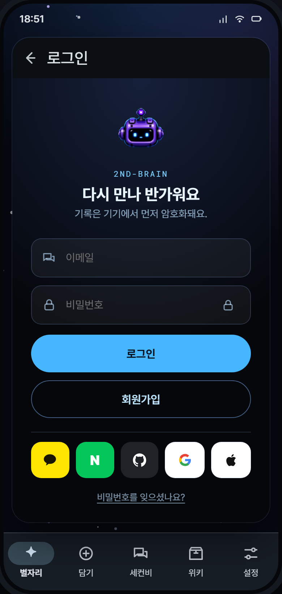

01
로그인
auth딥스페이스 브랜드 로그인. 로그인↔가입 모드 전환, 기기 우선 암호화 고지.
화면 구성
- 세컨비 헤드 브랜딩 + “2ND-BRAIN” 로고
- 모드별 헤드라인 전환: 다시 만나 반가워요 / 나를 쌓기 시작해요
- “기록은 기기에서 먼저 암호화돼요” 신뢰 고지
- 하단 약관·개인정보 동의 안내
버튼 · 기능
| Apple로 계속 | 홈으로 진입 |
| Google로 계속 | 홈으로 진입 |
| 이메일로 계속하기 | 이메일 로그인 |
| 가입하기 / 로그인 | signin↔signup 모드 토글 |